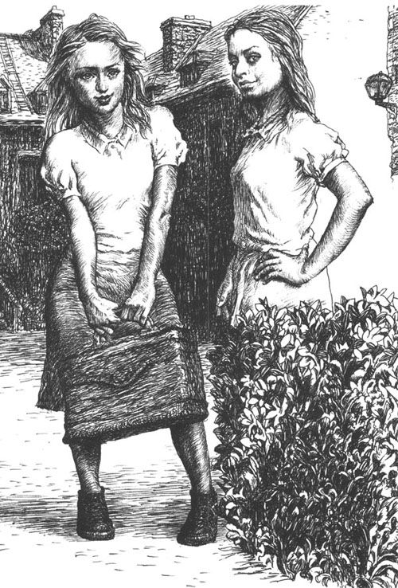
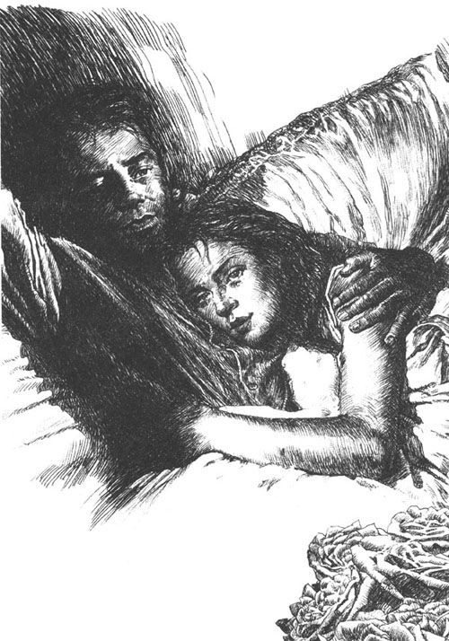
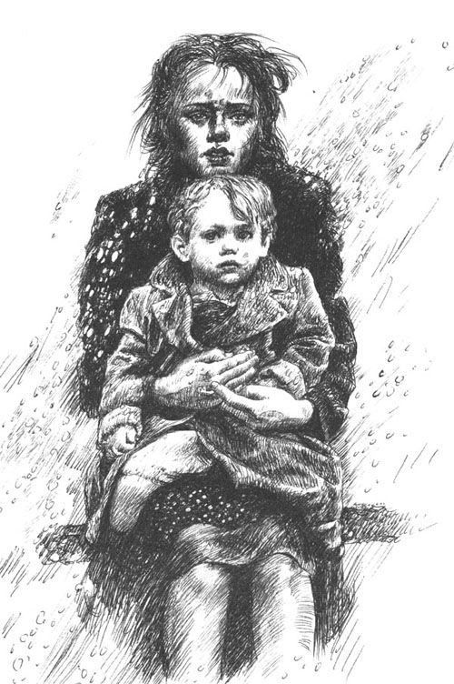
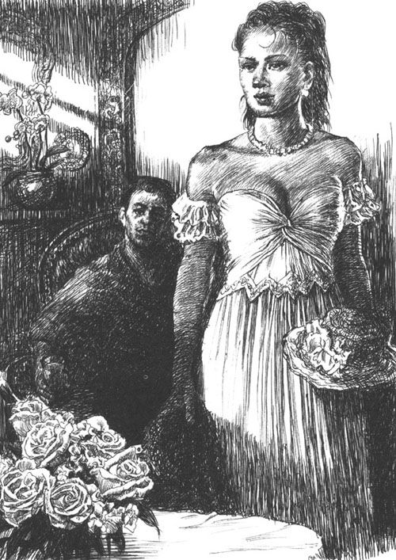

著名小说家R先生在山区进行了为期三天的休养旅行，这天清晨他乘火车返回了维也纳。R先生在火车站买了一份报纸，他迅速地扫了一眼报头上的日期，突然想起来，今天竟然是他的生日。他已经四十一岁了！他的脑海中迅速闪过这个念头。但这并没有让他觉得舒服，或者觉得难过。他仓促间窸窸窣窣地翻了翻报纸，然后乘一辆小轿车回到了寓所。他刚到家，家仆就来报告，在他外出旅游这段期间，有两次客人来访，接到过几个电话，还用托盘呈上收到的信件。他随便看了看来信的落款，其中有几封信的寄信人引起了他的兴趣。有一封信的字迹看起来很陌生，信封里装了厚厚一沓。他先把这封信搁到了一边。这时候仆人把茶端了上来，他放松地靠在椅背上，翻阅报纸和一些印刷品。之后他点了一支雪茄，拿起了刚才放在一边的那封信。
信纸大约有二三十页，从这封信上潦草的字迹能辨认出，它出自一个陌生女人之手。与其说它是一封信，不如说是一部手稿更为恰当。他下意识地又摸了摸信封，看信封里是不是遗漏了什么附件。但信封是空的，和信纸上一样，都没有写着寄信人的地址或签名。“太奇怪了。”他一边想，一边把信纸拿在手里。“你，从来都没有认识过我的你。”信的开头这样写道，算是一种称呼吧，或者是标题。他惊讶地停顿了一下：这指的是他吗？还是指一个想象中的人物？他的好奇心突然间被唤醒了。他接着往下读：
我的孩子在昨天死了——虽然我已与死神抗争了三天三夜，想要奋力保护这个幼小的、脆弱的生命。我在他的床边坐了四十个小时，而流感和高烧正在侵袭他那可怜、滚烫的身体。我在他那滚烫的额头上敷了凉毛巾，整日整夜地将他那不安的小手握在手心里。在第三天晚上的时候我终于累垮了。我甚至连眼睛都睁不开了，但我并没有意识到这一点。我在一张硬硬的靠背椅上昏睡了大约三四个小时，而就在这期间，死神夺走了他幼小的生命。现在他就躺在那儿，曾经可爱又可怜的那个孩子，他躺在窄小的儿童床上，就像他刚死去的时候一样。只是他的眼睛被合上了，他那双聪慧的黑眼睛不能再睁开了。他的双手合在一起，放在他那白衬衣上。床的四个角上点燃着四支蜡烛。我不敢再看他一眼，也不敢动弹一下，因为烛光一闪烁，影子就会掠过他的脸庞和紧闭的嘴唇，看起来就好像他仍然能动。我总觉得他还没死，他还能再醒过来，用他那清脆的声音和我说一些温暖而稚气的话。但是我知道，他已经死了，我不想再去看他，是为了不再给自己希望，不再使自己经历希望后再绝望。我知道，我深切地知道，我的孩子在昨天死了——现在在这个世界上我只有你了，只有这个对我一无所知的你了。你可能现在对此全然不知，正在嬉戏取乐，或者和其他人玩得酣畅淋漓。但我只有你了，这个从来都没有真正地认识过我、而我一直深爱着的你。
我点燃第五支蜡烛，把它放在桌子上，我就坐在这张桌子旁边给你写信。因为我无法孤独地守着我的孩子，我的灵魂必须大声呐喊。在这个令我恐惧的时刻，如果不是对你，我还能对谁敞开心扉呢？你曾经是我的一切，现在也是！或许我无法清楚地向你解释这一切，或许你根本理解不了我说的话——现在我的头昏昏沉沉的，我的太阳穴在抽搐，就像是被锤子击打着一样，我的四肢也疼痛难忍。我觉得我是发烧了，也可能得了流感，流感病毒正在一家一户地蔓延着。这样也不错，这样我就可以和我的孩子一起离开这个世界，就不会再忍受任何的痛苦了。我的眼前偶尔会一阵发黑，或许我都没法写完这封长信——但是我会竭尽全力，希望这次，也只有这一次，能向你吐露心迹。你是我的爱人，而你却从未认出过我。
我只愿意对你一个人说，通过这一次向你说明一切。你应该知道我的一生永远都是属于你的，而你却对它一无所知。而只有在我死后，你才能够知道我的秘密，这时你无须再对我做出任何答复。此刻，我的四肢在抽搐中一阵阵发冷，又一阵阵发热，我可能真的快要走到生命的尽头了。如果我有幸逃过这一劫又活过来了，我一定会把这封遗书撕得粉碎，继续保持沉默，就像我在过去的人生中一直表现的那样。如果你现在正把这封信拿在手里，那么你就会知道，这是一个已死的女人在向你讲述她的整个人生，她的生命。从她生命最开始的一刻，到她最后仍清醒的每一分钟都是属于你的。你不用害怕我说的话。一个已死的人已经不需要任何的爱、同情或者是安慰。我对你只有一个要求，请你相信我所说的一切——我追随到你身边，痛苦地向你表露的一切。相信我所说的一切，这是我对你唯一的请求：一个女人，在她唯一的孩子去世的时刻，是不会撒谎的。
我想要向你讲述我的一生。我的一生是从认识你的那一天才真正开始的，在此之前的生命都是混沌而杂乱的，在我的记忆中再也不会想起它们来。那只是一间阴暗发霉的地下室，里面满是被灰尘和交错的蜘蛛网覆盖的、死气沉沉的人和东西，我对他们毫无兴趣。当你搬到这儿的时候，我已经十三岁了，就住在这栋老房子里，就是你接到我用最后一口气写完的这封信的这栋房子。当时我们住在同一条走廊的对门。你肯定记不起我们了，记不起那个可怜的寡妇会计（她常年穿着丧服）和她那个未成年的、瘦弱的孩子。我们母女俩的生活相当平静，就像是陶醉在我们小市民式的贫穷之中——你或许从来都没听说过我们叫什么名字，因为我们家门上没有名牌。没有客人拜访我们，没有人打听我们。哦，这已经是很久之前的事了，可能有十五六年了。不，你一定什么也不知道了，我的爱人。但是我，噢，我却能激动地回忆起每个细节。我还记得在那一天，不，是那个时刻，我第一次听到你的名字的时候，第一次看到你的时候，这一切就好像发生在昨天。从那一时刻起，我的人生才真正开始。耐心点儿，我的爱人，我要把一切从头到尾、原原本本地都告诉你，我祈求你给我一刻钟的时间来听我诉说，不要疲倦，因为我爱了你一辈子，却从未感到过疲倦。
在你搬到我们这栋老房子之前，你的房里住着一户讨厌的、令人恼火的、经常吵架的人家。他们自己也很穷，却总是痛恨我们这些贫困的街坊，因为我们不愿沾染他们那种低俗的、无产阶级的粗野。这家的男人是个嗜酒者，经常打女人。我们经常在半夜被摔凳子和砸盘子的声音吵醒。有一次这个女人被打得流血，披头散发地跑下楼梯，这个又喝醉了的男人在后面边追边叫喊，所有住户都被吵醒了，从各自家里出来，用报警来威胁这个酒鬼。我的母亲从一开始就极力避免与他们接触，也不许我和他们家的孩子说话，为此那些讨厌的孩子一有机会就报复我。当他们在大街上碰到我时，他们就在我背后向我骂脏话，有一次他们还用攒得非常结实的雪球扔我，打破了我的前额，甚至都流了血。整栋房子的住户都憎恨这家人，直到有一天突然发生了点儿事情——我觉得，可能是因为那家的男人偷东西被逮住了，剩下女人和孩子，带着他们那不值钱的家当搬走了——我们所有人才松了口气。房屋出租告示在门上贴了几天，之后又被撕了下来。来自房东的小道消息迅速传开了：一位作家，一位单身、安静的先生已经租下了房子。那是我第一次听到你的名字。
几天之后，油漆工、粉刷匠、清洁工和裱糊匠就都来了，房子被之前的住户弄得脏乱不堪，这回得彻底清理。整日都能听见叮叮当当的锤子声、打扫的嘈杂声和刮墙声，但是母亲却很高兴。她说，这回终于结束了和那个脏乱的家庭做邻居的日子了。在搬家的过程中，我还没有遇到过你。所有这些工作都是你的仆人主管的，那位矮小严肃、头发灰白的管家。他以一种低沉、客观的态度发号施令，管理一切事务。他给我们所有人都留下了深刻的印象。首先是因为在我们住的郊区老房子里，突然来了一位管家，这总会让人觉得很新奇；此外，他对我们每个人都客气得要命，但这并没有使他和其他普通仆人等同。从第一天起，他就像问候一位夫人那样和我母亲打招呼，连对我这个小孩子也是和蔼而严肃。当他提到你的名字时，总是带着某种敬畏，一种特殊的尊敬——能看得出来，他和你之间的关系远远超过一般的主仆关系。为此我是多么喜欢他啊，这位善良的老约翰！尽管我老是嫉妒他，因为他可以一直在你周围出现，一直服侍你。
我要向你讲述这一切，我亲爱的你，所有一切微小、几乎算是可笑的事情，这样你才能明白，你是怎样从一开始就具备一种特殊的魔力，使得这个害羞而胆小的孩子，就是当时的我，对你深深地着迷。在你还未真正进入我的生活之前，你头顶的光环，围绕着你的富有、新奇、神秘的氛围已经先到了——我们这些住在郊区老房子里的住户（我们这些人生活圈子狭窄，总是对门外所有的新鲜事都感到好奇）对你搬进新居可以说是望穿秋水了。一天下午我从学校放学回家，看到门前停着一辆装满家具的车，这时我对你的好奇心陡然增加。大部分大件家具已经被工人们抬进去了，现在人们在搬运一些小物件。我在门边停住了脚步。所有的一切都使我大开眼界，你的一切的东西看起来都是那么稀有罕见，都是我从来没有见过的：有印度的佛像，意大利的雕刻，非常华丽的、巨大的画作，最后还有各种书，如此多、如此包装精美的书，我从来都不知道竟会有这么漂亮的书。书籍先被摞在房门口，再由管家接过来。他用棍子和掸子仔细敲打和扫掉每本书上的灰尘。好奇心驱使着我绕着这堆越摞越高的书蹑手蹑脚地走。管家没撵我走，但也没鼓励我走近瞧，因此我不敢动手去摸那些书，尽管我非常想抚摸一下有些书精致柔软的封皮。我只能从侧面怯生生地看到一些书的名字：其中有法文的，英文的，还有一些别的语言的——我根本不认识的语言。我觉得，当时我一定是发呆似的在那儿站了几个小时，把所有的书都看了一遍，然后被妈妈喊回家的。
整个晚上，我的脑海里想的全是你，这还是在我认识你之前呢。我自己只有几本便宜的书，封面都是用破旧的硬纸板做成的，但我还是将它们视作珍宝，读了又读。从那时起我就总是不由自主地思索一个问题：这位新搬来的先生会是什么样的呢？他有这么多精美的书，并且全都读过，他一定通晓书上所有的语言！同时他又是一个这么富有、有修养的人。一想到这么多书，我的心里就涌起一种敬畏的心情。我试图在脑海中构建出你的模样：你是一位戴着眼镜的老者，留着长长的白胡子，看起来就像我们的地理老师，只不过更和蔼，更英俊，更优雅——我不知道为什么我当时那么确定，你一定看起来很英俊，虽然在我的想象中你还只是个老头呢！在那个夜晚，在真正遇到你之前的那个夜晚，我甚至都会梦见第一次和你相遇的场景。
第二天你终于搬进来了，尽管我一直在寻找机会，但还是没能真正见你一面——我的好奇心变得越来越强烈。终于在第三天，我看见了你，这使我大为惊讶——原来你看起来这么与众不同，和我对你的想象简直没有任何关系！我原以为你会是个慈祥的、满头白发的老者，鼻梁上架着副眼镜，而现在你终于出现了——你看起来就像今天一样，你一点儿也没变，在你脸上，岁月没有留下任何痕迹！你穿着件浅褐色的迷人的运动服，以你那无比轻快的、男孩般的步伐跑上楼梯，一步跨上两级台阶。你手里拿着帽子，我当时以一种无法形容的惊讶望着你，望着你那年轻的、充满朝气的面庞和你那漂亮的头发。的确，我当时惊讶得发呆。你是那么年轻，那么英俊潇洒，那么灵活敏捷，身材修长，优雅大方。这不是很奇怪吗：从见到你的第一刻起我就清楚地感觉到——和其他所有人一样惊讶地一再感受到，你是一个具有双重性格的人，一个热情、随性、喜欢游戏人生、热衷冒险的年轻人，同时在所从事的艺术领域中，你又是一个坚强而严肃、有责任感、学识渊博、非常有修养的人。我无意识地感觉到之后每个在你身边的人都能感受到的那种印象——你是一个有着双重生活的人，一种生活披着华丽的外表，开放地迎接整个世界；另一种则是特别灰暗的，而只有你自己知晓——我从见到你的第一眼开始就感觉到这种深藏着的两面性。你神秘的生活，深深吸引着这个十三岁的女孩。
你现在应该明白了，我亲爱的你，你对我这个孩子来说是一种什么样的奇迹，一种多么迷人的不可思议！这样一个让人们抱有敬畏感的人还是一位作家，在另一个巨大的圈子内广为人知。但突然出现在眼前的却是一位年轻优雅、男孩般活泼开朗、刚刚二十五岁的男人！我还必须告诉你，从这一天起，在我们这栋房子里，在我整个可怜的童年时期，没有什么比你更吸引我的了。对于我这个特别固执、又带着一股钻劲儿坚持的十三岁女孩来说，当时每天的生活就是围着你转，围着你的生活转。我一直观察你，观察你的饮食起居和生活习惯，观察和你有来往的人们。这一切不但没有消减我对你本人的好奇心，反而使它大大增加了，因为你性格中的两面性在不同的来访中完全显露了出来。你的朋友们——一些年轻人来访时，你同他们谈笑风生，忘乎所以。你那儿还曾来过一些衣衫褴褛的大学生，也有一些坐着汽车来的夫人，有一次还来了位歌剧院的经理，一位有名的大指挥家，我只是胆怯地在远处望见过他站在乐谱架旁边。之后就是一些还在商业学校念书的年轻姑娘。她们羞答答地推开门，迅速溜进去。总之来过很多女人，特别多的女人。对此我并没有什么特别的想法，就连一天早晨我出门上学，看见一个蒙着厚厚面纱的女人从你家里出来时也一样——我才只有十三岁，但强烈的好奇心驱使我观察并思考你身边的一切。当时我还是个孩子，并不知情，原来这种好奇已经是爱情了。
但是我却清楚地记得，我亲爱的，从那一天的那一时刻起，我就彻底地、永远地爱上了你。我和一位女同学散步回来后，就站在大门边闲聊。这时开过来一辆车，停在了大门口，刚一停稳你就以你那急性的、敏捷的方式从车子上跳了下来，想要进门——这姿态在今天看来仍使我对你颇为倾心。像是有一种本能，迫使我为你打开了门，这样我就会挡在你前面。我们当时差点儿撞在一起。你用一种温暖、柔和、深情的目光望着我，露出无限爱意。你还冲我微笑了一下——是的，我只能说：你含情脉脉地笑了，用一种轻柔的、几乎是亲密的声音说道：“多谢，小姐。”
事情的经过就是这样，亲爱的。但是从这一刻起，从我接触到你那温柔多情的目光开始，我就深深地爱上你了。不久后我就发现，你的目光像是要把一个人抱起来，拉到你身边，是那么的多情又摄人心魄，这是天生的诱惑者的目光。你对每位从你身旁经过的女士，每位卖东西给你的女售货员，每位帮你开门的姑娘都报以这样的目光。你自然流露出的这种目光并不是有意识地要表示你有多喜欢或爱慕她们，而是一种对女人的无意识的温柔，你的目光一接触到她们就马上变得温暖柔和了。但是我，作为一个十三岁的孩子，并不理解这一切：我当时就像经历火燎一般。我总觉得你只对我才有那样的柔情，只是对我一个人。就在这一时刻，我内心少女般的柔情苏醒了，就在这个未成年孩子的心底。从此这个女人便一发不可收拾地终生爱着你了。
“他是谁？”我的朋友问道。我不知道该怎样回答她，我甚至激动得说不出你的名字。但就在这一刻，在这唯一的时刻，你的名字对于我来说突然变得神圣了，它已经变成了我的秘密。“哦，是位先生，住在我们这栋房子里的……”我结结巴巴、笨嘴笨舌地说道。“那他一看你，你的脸怎么就变红了？”我的朋友用那种女孩子好奇的幸灾乐祸的神态挖苦道。当我感到她的嘲讽触碰到了我的秘密时，血一下子都涌到了我的头上，我的脸变得更红更热了。我急切地想要摆脱这种尴尬。“傻丫头！”我粗鲁地说道，真恨不得把她掐死。但是她笑得更大声了，嘲讽的语气更加厉害，直到我被气得没办法，感觉眼里的泪水都快掉下来了。我甩开她，一个人跑上了楼。
从这一刻开始我就已经深深地爱上了你。我知道，女人们经常对你这个娇纵惯了的人说这样的话。但是我坚信，没有一个女人像我这样爱你爱得这么卑微，这么盲目，这么全心全意。我过去是这样爱你，而且会永远这样爱你，因为在世界上没有任何事情能和一个孩子那不被察觉的爱相比，因为这种爱如此的不抱希望，如此的卑躬屈膝，如此的低三下四，如此的不动声色却又充满狂热。它与一个成熟女人所释放的、本能的、有所要求的爱截然不同。只有孤独的孩子才能把自己全部的激情积聚起来，而其他人则早在各种各样的社交活动中滥用了她们的感情，磨平了她们的感情，她们听说过、在小说中读到过、或者亲身了解过太多的爱情故事，早已知晓爱情究竟是怎样一回事。于是她们开始玩弄感情，把爱情视作玩具。她们炫耀自己的爱情经历，就像男孩们抽第一根烟那样。但是我，我周围没有任何可以寻求帮助的人，没有经过任何人的指点和提醒，对爱情毫无经验、一无所知。就是这样一个我，却一头栽进命运里，就像栽进一个万丈深渊。我内心生长或觉醒的一切都是关于你的，夜里梦见的总是你，我把你视作知己。父亲去世的早，我的母亲终日沉浸在沉重的压抑中，靠父亲微薄的退休金生活，终日殚精竭虑，对我越来越冷漠。那些开始变坏的女同学也让我反感，她们对待爱情态度轻浮，而在我的心目中，爱情却是至高无上的激情——所以我把一切分散的、零乱的情感，把我压抑的、一再急切想表达的情感都投射到你身上。你对于我来说——我应该怎么跟你说才好呢？任何的比喻都太微不足道了——你就是我的一切，我的整个生命。因此所有存在的一切都和你有关，我生活的全部正是因为和你联系在一起才变得有意义。你改变了我的整个人生。原本在学校成绩平平、不被人注意的我，突然一跃成为班级第一名。我一天天废寝忘食地读书，因为我知道，你喜欢读书。妈妈也惊讶地发现了我不寻常的举动：我突然开始非常固执地坚持练钢琴，因为我知道，你喜欢音乐；我把所有的衣服都洗得干干净净，缝了又缝，只是为了在你面前显得得体恰当，讨人喜欢。我的那条旧校服罩裙左边有一块四方的补丁（这是用我妈妈的家居服改的），这让我感到极其不安。我担心你会注意到这块补丁而瞧不起我，因此我在跑上楼梯时，总是用书包盖住这块补丁，甚至害怕被你注意到这块难看的补丁而发抖。但我多愚蠢啊，你根本没有，或者说几乎没有再正眼看过我。

“那他一看你，你的脸怎么就变红了？”
除此之外，有时候我一整天什么也不做，只是坐在那儿等你出现，暗中偷看你。我家的房门上有一个小的黄铜门洞，透过这个圆形的门洞可以看到你家的房门。这个门洞——不，不要笑我，亲爱的，直到今天，我每次想到那些站在门洞后的日子，一点儿也不觉得羞愧——它是我观察外界的眼睛。在那儿，就在那个冰冷的前厅，我还曾担心引起妈妈的怀疑。在那些日子里我就坐在门洞后，手里拿本书，整个下午都在那儿等，心里紧张得就像绷着一根琴弦，你一出现就会响个不停。我的生活终日围绕着你，一直处在紧张和激动的状态之中。而你对这一切毫无感觉，就像对你衣兜里的怀表上绷紧的发条一样毫无察觉。这根发条在暗中耐心地数着你的钟点，计算着你的时间，以它听不见的心跳陪着你东奔西走，而你在它那滴答不停的前进当中，只有一次向它匆匆瞥了一眼。我了解你的一切，知道你的所有习惯，认识你的每条领带、每件西装。我很快就认识并区分了你的每个熟人，还把他们分成了几类，一些是我喜欢的，另一些是我讨厌的。我从十三岁开始一直到十六岁的每个小时都是和你一起度过的。啊，我做过多么蠢的事：我亲吻你抚摸过的门把手，我偷过一个你进门之前扔掉的雪茄烟头，并将它视若珍宝，因为你的嘴唇曾接触过它。晚上我有几百次借故跑下楼去，到胡同里去看看你房间还亮着的灯光，用这样的办法来感觉你那看不见的存在，在想象中亲近你。在你出门旅行的那些日子——当我看见善良的老约翰把你的黄色旅行包提出来时，我的心跳由于害怕而加速——那几周，我的生活像一潭死水，没有任何意义。我总是闷闷不乐、百无聊赖、心神不定，但还得一直提防别让母亲注意到我哭红的眼睛和透露出的失望。
我知道，我向你讲述的都是些极其可笑的荒诞行径，这是孩子气的愚蠢。我应该对曾经做过的傻事感到羞愧，但是我并不羞愧，因为我在那个幼稚的岁月对你的爱是最纯洁、最热烈的。我能够连续几小时、或者几天向你讲述我当时是怎样和你在一起生活的，你却几乎不认识我的长相，因为每次上下楼梯相遇而又无法逃避的时候，由于怕看到你那灼人的目光，我便低着头从你身边跑过去，就像是为了躲避烈火烧伤，而纵身跳进水里一样。我可以对你说上几个小时甚至几天，回忆那很久以前你早已忘怀的岁月，展开你生活的全部日历。但是我不想让你觉得无聊，不愿折磨你。我只愿把童年最美好的回忆讲给你听，我请求你不要取笑我，因为对于你来说这是一件非常小的事，但是对于我这个孩子来说却是天大的事。我很清楚地记得那天是星期天，你出门去了，你的管家已经把那几条沉重的地毯敲打干净，打开了房门，正把它们往屋里拖。这个善良的人看起来很吃力，我突然走向他问道，是否需要我帮忙。他很惊讶，但还是接受了我的帮助，所以我有机会参观你的房间——我只能对你说，当时我是怀着多么尊敬、虔诚的仰慕之情走进你的房间的——你的寓所内部，你的个人世界，有你常坐的写字台，写字台上有一只蓝色的水晶花瓶，里面插着几朵花。还有你的柜子、你的画、你的书……我只对你的生活匆匆忙忙、悄悄地看了一眼，因为老约翰，这位忠诚的仆人一定不会让我看仔细的。虽然只看了这么一眼，我还是融入了整个气氛，这足以让我无休止地梦见你，无论是醒着还是睡着。
这飞快的一分钟是我童年度过的最幸福的时刻。我想向你讲述这一刻，希望以此能使这个从未认识过我的你终于开始体会到，有一个生命一直依恋着你并且为你香消玉殒。我想要把这个最幸福的时刻告诉你，同时也要把那最可怕的时刻告诉你，可惜它竟接踵而来。我已经和你说过了，因为你，我忘记了其他一切事情，当然也忽略了我的母亲，没有关注其他任何人。我没有发觉，一位上了年纪的男人——他是来自因斯布鲁克的商人——和我的妈妈是远亲，经常光顾我们家，而且一呆就是很长时间。是的，这使我感到很高兴，因为他有时会带着妈妈一起去看戏，这样我就有机会独自在家想你，在暗中观察你了。这是我最幸福并且唯一感觉幸福的时刻。一天，母亲表情复杂地把我叫进了她的房间，她说要和我严肃地谈谈。我的脸都白了，连怦怦的心跳的声音都能听见。她发现什么了吗？还是猜到了什么？我第一个念头就想到了你。
但是母亲自己却显得很尴尬。她先温柔地亲了我一两下（她可从来没这么做过），然后把我拉到沙发旁坐下，有点儿犹豫又不好意思地开始说，她的这位远亲是个鳏夫，已经向她求婚了，她主要是为我考虑，才决定答应他的求婚的。一股热血涌向我的心头：我头脑中只回响着一个念头，这个念头就是你。“那我们还住这儿吗？”我结结巴巴地勉强说出这句话。“不了，我们要搬到因斯布鲁克去，费迪南在那儿有座非常漂亮的别墅……”之后我就什么也听不见了，眼前一阵发黑。后来我才知道，当时我晕倒了。我听见母亲和那位即将成为我继父的人在低声说着什么，他其实一直躲在门后。我突然双手向外一摊，身体向铅块一样摔倒在地上。之后的几天发生了许多事，像我这样一个孩子抵抗不了他们强大的意志。这些我都无法向你形容：现在想起来，我写信的手都还会发抖。我不能向任何人透露我的真实想法，我的抵抗看起来只是固执任性、无理取闹、故意捣乱的行为。没有人再和我说话了，所有的一切都是在我不在场的情况下进行的。他们利用我上学的时间来搬家：当我回到家时，总是发现又搬走或是变卖了什么家具。我慢慢看着这个家被搬空了，同时我的生活也慢慢被毁掉了。终于有一天我回家吃午饭的时候，看见搬运工人把所有的家具都搬走了。空荡荡的屋子里只剩下打包好的行李箱以及为母亲和我准备的两张行军床——我们还要在这儿睡一夜，最后一夜，明天早晨就要启程去因斯布鲁克了。
在最后一天，我突然坚决地感受到，如果不在你身边我根本活不下去，你是我唯一的救赎。我永远也说不清我当时是怎么想的，在那种绝望的时刻我是否真正清楚地考虑过，但是——我的母亲正好不在家——我突然站起来，身上穿着校服，径直走到你家门前。不，我不是走过去的：我的双腿僵硬，四肢颤抖，像被磁铁吸引到你家门口一样。我向你说过，我并不清楚我想要做什么。我想跪在你面前，求你把我留下当女佣，做奴隶。我害怕你会嘲笑一个十五岁姑娘这些天真的幻想，但是亲爱的，我当时就站在外面冰冷的走廊里，浑身僵硬地站在那儿，就好像有一股看不见的力量把我往前推。我将那一直颤抖的胳膊努力地举起来——这场战斗持续了几秒钟，但却像是永恒的——我终于抬起胳膊按下了门铃按钮，直到今天我还能回想起那刺耳的门铃声。接下来却是死一般的沉寂。我的心脏停止了跳动，全身的血液也凝固了，我屏住呼吸趴在门上听着，你是不是来开门了。
但是你并没有来，根本没有人来开门。那天下午你显然是出门了，约翰也出去办事了。于是我就蹒跚地走回那破败不堪、已经搬空的家，耳朵里嗡嗡地回响着刚才那了无生气的刺耳的门铃声。我疲惫地倒在一张旅行毯上。从你的门口走到我家仅仅四步，可我却走得筋疲力尽，就像是在厚厚的积雪里跋涉了几个小时一样。虽然疲惫不堪，可我依然想在被他们拉走之前跟你见一面，和你说话的决心依然在燃烧，并未熄灭。我向你发誓，这并不是什么情欲的念头，我当时什么都不懂，我脑子里想的只有你。我只想见到你，见你最后一面，紧紧地抱住你，在这最后一夜，漫长、可怕的一整夜。亲爱的，我一直在等你。母亲一上床就睡着了，我就蹑手蹑脚地溜到前屋里，为了听见你什么时候回家。整夜我都在前屋蹲着等你，那时还是冰冷的一月的夜晚。我已经很累了，四肢酸痛，想坐一会儿却连张椅子也没有，所以我就径自躺到冰冷的地板上。冷风透过门缝吹得我更冷了。我就穿着单薄的衣服躺在冰冷的、使人浑身发疼的地板上，连毯子也没有。我不想暖暖和和地等着，因为害怕一暖和自己就会睡着，就听不到你回来的脚步声了。这种等待是一种煎熬。我的脚被冻得抽筋，胳膊一直在颤抖，我不得不一次又一次地站起来。在这可怕的黑暗中，夜晚是如此的寒冷。但是我还在坚持着，一直等，等待着你出现，等待着我的命运。
终于——应该是凌晨两三点钟了吧——我听见楼下开大门的声音，之后有上楼梯的脚步声。我瞬间寒意全无，一股暖流传遍全身。我轻轻地打开了门，准备冲到你面前，跪在你面前……哦，我真不知道，我这个愚蠢的孩子在当时的情况下会做出什么事来。脚步声越来越近了，蜡烛的灯光在楼梯上闪烁。我握着门把手，浑身颤抖。真的是你吗？你回来了吗？
是的，真的是你回来了，亲爱的。但是你不是一个人回来的。我听到一声挑逗的轻笑和丝绸衣裙拖地的沙沙声。你在轻声说着什么——你是和一个女人一起回来的……
我不知道自己是怎么熬过这一夜的。第二天早上八点钟，他们就把我带到了因斯布鲁克，我已经没有任何力气进行反抗了。
我的儿子昨天晚上死了——如果我还能继续活下去的话，我就又变成孤身一人了。明天他们就要来了，那些黑炭似的、粗野的陌生男人们。他们会带来一口棺材，把我那可怜的、唯一的孩子放进去。
可能还会来一些朋友，送来花圈，但是鲜花放在棺材上又有什么用呢？他们会来安慰我，对我说几句话，但这些话对我又有什么用呢？我知道这之后我又是孤独一人了。没有什么比孤单地存在于人群中更可怕的了。我早就体会过这种感觉。当时在因斯布鲁克度过的漫无边际的两年，就是我从十六岁到十八岁那两年，我就像是在坐牢的囚徒，一个生活在家里的局外人。我的继父是位特别安静、沉默寡言的人，对我很好。我的母亲像是为了弥补一个无意中犯下的错误，总是满足我所提出的所有要求。年轻人都围着我转，我却将他们的热情统统拒之门外。不在你身边，我不愿意幸福、知足地活着，我宁愿把自己封闭在一个自我折磨、孤单寂寞的昏暗世界。他们给我买的新的花衣裳我从来都不穿，我拒绝参加任何音乐会，从不跟别人一起快快乐乐地去看戏，甚至很少上街。亲爱的，你会相信吗，我对生活了两年的那座小城知之甚少，认识的街不超过十条。我一直难过而且愿意这么难过下去，只要我见不到你，就什么都不想要，只想从孤独中得到某种陶醉。而且我不愿意让自己分心，我只是热切地想要在心灵深处和你在一起。我一个人在家里一坐就是几个小时，有时还坐一整天，什么也不干，只是坐在那儿想你，一而再、再而三地回想关于你的成百上千的回忆。与你的每次相遇、每次等待都让我记忆犹新。这一幕幕的小插曲像演戏一样在我眼前重现，因为我把往日的每一秒钟都重复了无数次，所以我对整个童年时代都记得一清二楚，所以过去那些年的每一分钟对我来说都是那样生动、鲜活，仿佛这些都是昨天才发生的一样。
那段时间我心里想的全是你。我买了你的所有书。如果哪一天你的名字出现在了报纸上，那这一天对我来说就像是过节。我把你所有的书读了一遍又一遍，对书里的每一行字都烂熟于心。你会相信吗？直到今天，十三年后的今天，如果有人半夜把我叫醒，在我面前随便背上几句你书里的句子，我都能够接着往下背，就像是做梦一样。你的每个字对我来说都是福音书，都是祷告词。因为你的关系，整个世界才有它存在的意义。我在维也纳的报纸上读到音乐会和戏剧首次公演的消息，就会自问，你会对什么感兴趣？夜晚的时候我就会在远方默默陪伴着你——现在他进入大厅了，现在他坐下了。这场景我梦见过上千次，因为以前有一次我看见你去听音乐会了。
但是为什么又谈起这些事？一个孤独的孩子内心中那疯狂的、自暴自弃的、悲剧性的、绝望的狂热，为什么要对一个从不认识她、对自己一无所知的人谈起呢？难道我当时真的还是个孩子吗？我已经十七岁了，转眼又十八岁——大街上的年轻人开始回头看我了，但他们这样只会让我发火。因为和别人谈恋爱，或者哪怕只是在头脑中闪过和别人嬉闹的念头，对我来说都是那么不可理解、不可想象的，哪怕一点儿心动的尝试，对我来说都像是犯罪。我对你的激情丝毫未变，只不过它随着我身体的发育，随着我萌发的情欲·而变得更加炙热，含有更多肉体的因素，更有女人味儿。当年那个按响你门铃的不谙世事的女孩并不知道自己懵懂的意识里到底想的是什么，现在我找到了答案：把自己献给你，把自己完全托付给你。
周围的人都认为我是因为害羞或腼腆才拒人千里的（我没把秘密告诉过任何人），但在内心我却已经形成了一股钢铁般的意志。我全部的思考和努力都是为了这一目标：回到维也纳，回到你身边。我费了好大劲儿终于实现了这个愿望，尽管它在别人看来是那么荒谬可笑、令人费解。我的继父很富有，他把我当做自己的亲生女儿，但是我却始终固执己见，坚持要自己赚钱养活自己，最后终于成功投奔了在维也纳住的一个亲戚，找了一份在服装批发商场做店员的工作。
难道我还需要告诉你，我在一个雾气蒙蒙的秋季的傍晚终于、终于到了维也纳之后，奔向的第一个目的地？我把行李寄存在火车站，跳上一辆城铁——对我来说车开得简直太慢了，每次到站停车都让我恼火。终于来到你的房前，你的窗户里还亮着灯光，我的心怦怦直跳。只有到了这时候，这座城市才是鲜活的，这座对我来说如此陌生、如此毫无意义的喧嚣吵闹的城市。在这一刻，我才复活了，因为我知道你离我如此之近！你，是我的永恒的梦。我并不知道，实际上我与你的内心离得如此之远，无论是之前相隔无数的峡谷、山脉或者河川，还是现在你和我那热烈的目光只隔了一层透过稀薄灯光的窗户玻璃，我们的心其实都同样遥远。我翘首望了又望：你的灯光，你所住的房子，还有窗户后的你，这就是我的世界。两年来我一直梦想着这个时刻，现在我终于盼到了。在这个漫长、柔和、雾气弥漫的夜晚，我伫立在你家窗户下面，一直到房里的灯光熄灭。之后我才去寻找住的地方。
每天晚上我都会站到你的房前。我每天晚上六点从商店下班，工作的辛苦劳累让我筋疲力尽，但是我很喜欢这份工作，因为忙乱使我感觉不到内心那让人无法忍受的不安。每晚下班后，我一听到身后的百叶铁门哗的一声落地之后，就直接奔向朝思暮想的目的地，只想遇见你一次，只盼望能远远地用目光再次拥抱你的面庞，这是我唯一的愿望。大约在一周后，我终于如愿以偿地遇见了你。虽然只是匆匆一瞥，但这却是我根本没有料到的：我正站在楼下向你的窗口张望，你却横穿马路过来了。突然之间我觉得自己又变成了那个孩子，那个十三岁的孩子。我觉得全身的血液一下子都涌到了脸上，但同时我也不自觉地违背了内心迫切想要见你、感受你的目光的愿望，马上低下了头，像被人追赶似的飞也似的从你身边逃开了。后来我曾为自己当时这种女学生似的胆怯感到羞愧，因为现在我非常清楚自己的愿望：我想要遇见你，我寻找着你，所以才经历了这么多渴望的、令人煎熬的岁月，我希望你能认出我来，希望被你注意到，希望你会爱上我。
但是你很长时间都没有注意到我，尽管我每天晚上——无论是暴风雪肆虐，还是维也纳凛冽刺骨的寒风劲吹的晚上，我都风雨无阻地站在你家巷子口。我经常一连几小时徒劳无功地等待，而你常常是有熟人陪着匆匆地在我面前经过，有两次我还看见你和其他女人一起回来。当我看见一个陌生的女人紧紧抱着你的胳膊、你们边走边谈笑风生的时候，我觉得自己有了成年人的意识，对你有了一种新的、不一样的感觉。突然间心脏的疼痛抽搐撕裂着我的灵魂。对这一场景我并不感到惊讶，因为自童年时代起我就认识了那些常来拜访你的女人们，但是现在我却第一次感到某种肉体上的疼痛。我的心弦绷得紧紧的，非常敌视、同时又渴望得到你和另一个女人之间的这种明显的肉体亲密。之后一整天我都没到你的屋子前去张望，可能当时我的内心还有那种孩子般的自尊，或许一直到今天都有。但实际上这个抗拒内心真实感觉的空虚的夜晚是多么令人煎熬啊！第二天晚上我就又低三下四地来到你家门前，继续等待，等待着，就像我的命运长久地等待在你那封闭的生活之外一样。
终于，有一天晚上你注意到了我，我看见你从远处走过来。我决心把自己所有的信念都积攒到一起，这次不要再逃避你。说来也凑巧，当时正有辆货车在路上卸货，街道被占用，只剩很窄的过道，你只能从我身边经过。不经意间你那心不在焉的目光触到了我，它刚接触到我全神贯注的目光——这马上勾起了我内心深处的回忆——就一下子变成了你看所有女人时的目光，那多情、温存而又吸引人的目光，好像能把人拥抱起来，又同时紧盯住人不放。就是这样的目光使我由一个孩子变成了一个女人，将我唤醒，成为一个恋爱中的女人。你和我短暂对视了仅一两秒钟，我的目光就不能也不想再离开你了——之后你就从我身边走过去了。我的心跳加速，无意中放慢了脚步。出于一种无法控制的好奇心，我回头看，看到你也停住了脚步，正回过头来看我。你正以一种好奇的、饶有兴趣的眼光观察我，这使我马上就意识到：你没有认出我来。
你没有认出我，当时没有，之后没有，在我的一生中你永远都没有认出过我。我应该怎样，我的爱人，向你描述我在那一瞬间的失落——那次是我承受的不被你认出的命运中的第一次失望，而这种命运贯穿在我的一生中，最后还带着它离开人世。没有被认出来，始终没有被你认出来过。我该怎么向你形容这种失望！因为在因斯布鲁克度过的两年，我每分每秒都在想着你，除了想象我们在维也纳的第一次重逢之外，我什么都不愿意做。根据自己的心情状态，我曾梦见过相遇时最糟糕和最快乐的可能。如果我可以这么说的话，一切场景我统统都梦到过！在我心情最差的时候，我曾经设想过你会把我拒之门外，会看不起我，因为我的身份太卑微，长得太普通，太令人讨厌了。所有你不喜欢我的可能，你的冷淡、你的漠不关心……所有这一切我都在狂热的幻想中经历过——但这种结果，即使我心情再坏，自卑感再严重，我也不敢考虑。这是最可怕的：你根本不曾注意过我的存在。今天我总算明白了——噢，是你教我明白的——少女和女人的面容对一个男人来说是变化无常的，因为它就像一面镜子，时而激情热烈，时而充满稚气，时而又充满疲惫，镜中的形象流逝得很快，所以一个男人很容易就会忘记一个女人的长相。随着光阴流逝，她的年龄不断增长，一套衣裳就会把一个女人变成另外一个样。那些听天由命的人们，他们才是真正的智者。但是对于我来说，当时我还是个小姑娘，我还不能理解你对我的这种遗忘，因为我原以为自己在对你毫无节制、没完没了地思念时，你肯定也会经常想起我，一直等待着我。其实我早该意识到，我对你来说什么都不是，你从来都没有想起过我，哪怕是一点点！你对我投来的那种眼神将我从幻想中唤醒，你的目光告诉我，你已经不再知道我是谁，你生活的全部记忆没有一丝一毫是关于我的，这使我第一次跌回到现实当中，第一次了解到了自己的命运。
你当时没有认出我。两天之后我们再次相遇，你的目光带有某种亲切，上下打量着我。你还是没有认出我，那个一直爱着你、被你唤醒的我，而只看见了那个十八岁的姑娘，那个你两天之前也是在这个地方擦肩而过的漂亮姑娘。你友好又惊喜地看着我，嘴角带着一丝微笑。你再一次从我身边走过，再一次马上放慢了脚步。我颤抖，我狂喜，我祈祷，你会走过来和我打招呼。我感觉到，我第一次为你而充满活力。我也放慢了脚步，没有躲避你。突然，我感觉你走到了我身后，尽管我并没有回头。我知道，现在我要第一次听到你对我说话时那可爱的声音了。这种期待使我全身麻痹，我觉得自己不得不停下来，因为有什么东西在敲击我的心脏——这时你走到了我的身边。你用你那特有的轻松愉快的声音和我说话，就像我们已经是认识很长时间的朋友似的。哦，但你并不认识我，你对我的生活一无所知！你对我说话时如此富有魅力，自然洒脱，以至于我也能够放松地回应你的问候了。我们一起走过巷子。之后你问我，是否愿意与你共进晚餐。我毫不犹豫地答应了。我又怎么敢拒绝你呢？
我们在一个小餐馆里吃了饭——你还记得那家餐馆的位置吗？你肯定已经不记得了。你一定分不清这个时刻与其他所有这样的傍晚有什么区别，因为我对你来说又算得了什么？我只是你邂逅的成百上千的女人中的一个，我们短暂的情意只是你无数风花雪月中的一个小插曲罢了。我还指望你记得些关于我的什么呢。我说的很少，因为这一刻有你相伴，我感受到的只有无边的幸福，只想听你说话。我不想用任何一个问题，或是任何一个愚蠢的词语，来浪费与你相处的一分一秒。我永远不会忘记内心无比感激你的这个时刻，你完全满足了我心里一直以来对你抱有的尊敬：你表现得多么柔情，多么温存，多么大度，没有一丝鲁莽，没有迫不及待、大献殷勤似的示好。从第一刻开始，你眼里始终带着稳重而友好的亲切感，即使我不是很早以前就把自己的全部身心都献给你了，只从这一刻起你也会赢得我的芳心的。哦，你还不知道，我幼稚地等了你五年，你一点儿也没让我失望，因为你在我面前表现得如此恰到好处！
我们吃完饭时天色已晚。走出餐馆门口时你又问我，是否着急回家，还是还有时间。我怎能隐瞒自己内心的真实想法，不答应你的要求？我说，我还有时间。之后你的脸上迅速闪过一丝犹豫，接着又问道，我是否愿意去你家里坐一会儿，聊聊天。“非常乐意！”我非常由衷地说道，但马上注意到你对我这迅速的答应感到吃惊，有点儿尴尬，抑或是高兴，反正显然是非常意外的。现在我已经明白了你的那种惊讶，我明白，对于女人们来说，不管她多么渴望与一个男人在一起，她通常要先掩饰这种热情，表现得大为惊恐或者怒不可遏。这常常需要男人们一再固执地请求，编出一些骗人的谎话，发一些浪漫的誓言或者做出承诺，女人们才能平静下来。我知道，或许只有靠出卖肉体为职业的妓女，或者相当幼稚、还处在青春期的孩子才会毫不犹豫、满怀喜悦地答应这样的请求。但是在我心里——你又怎么会知道呢——只是一直以来的心愿终于有机会用语言来表达，几千个日夜积聚起来的相思之情终于得以释放而已。总之，你当时吃了一惊，开始对我产生了兴趣。我觉察到，当我们一边走一边说着话的时候，你一直惊异地从侧面打量着我，你像有魔力似的能敏锐地嗅出所有人性的东西。现在你遇到了一个不寻常的姑娘，这个漂亮的姑娘内心深藏着某个秘密，这极大地激起了你的好奇心。我察觉到，你始终绕着圈子，旁敲侧击地提问题，想要获知这是怎样一个秘密。但是我避开了你：我宁愿在你面前表现得一无所知，也不愿向你透露我的秘密。
我们上楼走向你的家。对不起，亲爱的，你是无法理解这条走廊、这些楼梯对我意味着什么。我的内心何等陶醉、何等迷惘，这是一种什么样的突然降临的、折磨人的、几乎让我窒息的幸福！现在一想起这一切，我不禁又要潸然泪下，然而我已经流不出任何眼泪了。我感觉到，那里的每一件东西都跟我有深厚的感情，都是我童年时代那青涩的恋情的象征：在这个大门口，我千百次地等待过你；在这些楼梯上，我总是偷听着你的脚步声；也是在那儿，我第一次看到你；透过这个门洞我几乎看得出神……还有一次我跪在你门前的小地毯上，也有那么一次我听到你房门的钥匙哗啦一响，马上就从躲着的地方跳起来……我的整个童年，我的全部激情，都聚集在这几平方米大的空间里。我的生命都在这里，现在一切就像暴风雨似的突然向我袭来。因为所有的一切，我梦想中的一切都将得以实现！我和你走在一起，和你一起，在你的房子里，在我们共同的房子里。设想一下——这听起来也许很无聊，可是我不知道还能怎么说——直到你的房门口为止，一切都是现实、沉闷、平常的，像是延续了整个生命那么长，但之后便进入了儿童的魔法王国，阿拉丁的世界。你可以想象我千百次用炙热的目光盯着你的房门，现在我却如痴如醉地迈步走了进去！你或许能感受到——但也只是感受到，你永远也不会完全知道，我亲爱的——这转瞬即逝的一分钟从我的生活中带走了什么。
我整晚都和你在一起。你没有想到，之前还没有任何男人抚摸过我，没有任何人接触过或者看过我的身体。但是你又怎么能想到呢，亲爱的，因为我对你没有丝毫反抗！我压抑住因为害羞而产生的犹豫，只有这样你才不会发现我一直深爱你的秘密，这个秘密定会把你吓一跳的——因为你只喜欢轻松自在、游戏般、毫无压力的人生，你害怕影响别人的命运。你愿意挥霍你的感情，用在所有的人身上，用在整个世界上，可是不愿意作出任何牺牲。我现在对你说，我委身于你时，还是个处女，我请求你：千万别误解我！我不是埋怨你！你并没有勾引我、欺骗我或是引诱我——是我自己，我自愿凑到你的面前，扑到你的怀里，一头栽进我的命运里。我永远永远也不会抱怨，不会的，只会永远感谢你，因为那一夜对我来说真是莫大的喜悦，一种浮于尘世的幸福。当我在黑暗中睁开眼睛时，能感到你就在我身边。我甚至感到奇怪，我现在身处天堂，而繁星却不在我周围。不，我从来都没有后悔过，我的爱人，从来也没有为这一时刻后悔过。我还知道你在我身边睡着了，我听得见你的呼吸，感觉得到你的身体，我与你如此之近，我幸福得在黑暗中哭了起来。
第二天早上，我很早就急着要走。我得到店里去上班了，而且也想在管家来之前走掉，我不想让他看见我。当我穿好衣服站到你面前，你又抱住了我，长久地注视着我。或许是那模糊而遥远的回忆突然在你心里浮现，还是说你只不过觉得我当时美丽动人呢？然后你在我的唇上吻了一下。我轻轻地挣脱了你，想要离开了。这时你问我：“你不想带几朵花离开吗？”我说好。你就从书桌上那只蓝色水晶花瓶里取出了四朵白玫瑰（啊，我小时候那次偷偷地看了你房里一眼，从此就认得了这个花瓶），把它们交给了我。后来一连几天我都吻着你送的这些花儿。
我们事先约好了在一天晚上见面。那天我又去了，那晚同样奇妙而美好。你又和我一起过了第三夜。之后你就对我说，你要出门一段时间了。啊，我从童年时代起就极其痛恨你出门旅行！你答应我，一回来就会来找我。我给了你一个留局待取的地址——我不愿把我的姓名告诉你，我要严守着自己的秘密。你又给了我几朵玫瑰作为告别——作为告别时的纪念。
之后两个月里的每一天我都会到邮局去问……别说了，为什么要把这种由期待、绝望带来的地狱般的痛苦向你倾诉？我不责怪你，既然我爱你这个人，就会爱你那热烈而又健忘的感情，热恋时奋不顾身，之后又用情不专。我就是这样爱你，只爱你一直以来的这个样子，你过去是这样，现在依然还是这样。我从你亮着灯光的窗口看出，其实你早已回家了，但是并没有写信给我。即使在我生命最后的时光，我也没有收到过你写来的只言片语。我把我的一生都献给了你，可是我却没收到过你的一封信。我一直在等待，像个绝望的女人一样终生等待。可是你没有来找过我，你一封信也没有写给我……一个字也没有……
我的孩子昨天死了——这也是你的孩子。他是你的儿子，亲爱的，这是那与你共度的醉生梦死的三夜赐予的孩子。我向你发誓，一个将死之人是不会撒谎的。他是我们的孩子，我向你发誓，因为从我把自己献给你，一直到孩子的诞生，没有一个男人碰过我的身体。被你碰触之后，我觉得自己的身体变得神圣了：我怎么能把我的身体同时给予你和别的男人呢？你是我的一切，而别的男人只不过是我生命里来去匆匆的过客。他是我俩的孩子，亲爱的，是我那心甘情愿的爱情和你那漫不经心、任意挥霍、几乎是无意的多情造就的孩子，他是我俩的孩子，我们的儿子，我们唯一的孩子。但是你可能要问——也许是大吃一惊，也许只是略显诧异——亲爱的，你可能会问，这么多年漫长的岁月，为什么我一直没有把孩子的事情告诉过你，直到今天才告诉你。此刻他已经躺在这黑暗中沉睡，永远安静地睡去，准备离我而去，永远也不回来，永不回来！可是我怎么能告诉你呢？你是永远也不会相信，像我这样一个陌生女人，心甘情愿地和你过了三夜，没有任何反抗，甚至是满心渴望地向你投怀送抱，像我这样一个与你有过短暂风流的无名女人，你是绝对不会相信，她会对你这么一个用情不专的男人忠贞不渝的。你是永远也不会毫无任何怀疑地相信，这孩子是你的亲生骨肉的！即使我的话听起来似乎很有道理，你也不可能完全消除这种暗地里的怀疑：我看你很富有，企图把另一次艳遇带来的孩子硬推给你。你会对我产生猜疑，我们之间会存在隔阂，产生飘忽不定、暗地怀疑的阴影。我不愿意这样。除此之外，我太了解你了。我对你如此了解，可能比你自己对自己的了解还要多，我知道你在爱情里只是轻松自在、毫无负担地游戏人生，突然一下子当上了父亲，突然要对另外一个人的命运负责，一定会使你感到痛苦。你这个只有在无拘无束的自由里才能生活的人，一定会觉得因为孩子才和我有了某种牵连。你一定会因为这种牵连而恨我——我知道你会恨我的，会违背你自己清醒的意志而恨我的。可能只不过几个小时，也可能只不过短暂的几分钟，你便会觉得我令你讨厌，觉得我可恨——而我是有自尊心的，我要你一辈子想到我的时候没有任何忧虑。我宁可独自承担这一切，也不愿变成你的一个负担，我希望你想起我来时，总是怀着爱恋，怀着感激，我愿意成为你交往过的所有女人当中唯一这样的一位。可是，你从来也没有想起过我，你已经完全把我忘了。

当我在黑暗中睁开眼睛时，能感到你就在我身边。
我不是埋怨你，亲爱的，没有，我不会责怪你。请你原谅我，若是有时候从字里行间流露出一丝苦涩，那么请你原谅我——我的孩子，我们的孩子死了，躺在闪烁的烛光里。我冲上帝握紧了拳头，管他叫凶手。我内心痛苦，毫无头绪。请原谅我的抱怨，原谅我吧！我也知道你心地善良，内心深处乐于助人。你帮助每一个人，即便是素不相识的人来向你寻求帮助，你也毫不吝啬。可是你的好意是如此特别，它对所有人敞开，每个人都能得到你的帮助，要取多少取多少。你乐善好施的范围广大，可是——请原谅——它是被动的。它要别人提醒，要别人自己去争取才能获得。你只有在别人向你呼救、向你发出请求的时候，才肯帮助他。你帮助别人是出于面子，出于软弱，而不是出于快乐。你——让我坦率地跟你说吧——你更愿意与人共享幸福，而不愿和人共担患难。像你这种类型的人，即使是最善良的人，求你们帮助也是很难的。我还是个孩子时，有一次，我通过门洞看见有个乞丐按你的门铃，你给了他一些钱。还没等他开口，你就很快把钱给了他，而且给的还不少。但你给他钱的时候，显得有些害怕而且相当匆忙，恨不得他马上就走，好像你怕看他的眼睛似的。你帮助别人的时候表现出来的惶惶不安、羞怯腼腆、怕人感谢的样子，我永远也忘不了。所以我从来都没去向你求助过。当然，我知道，你肯定是会帮助我的，即使你可能一时无法确定这是不是你的孩子，你也会帮助我的。你会安慰我，给我钱，给我一笔数目可观的钱，可是心里总会怀有焦躁、不耐烦的情绪，想把这件扫兴的事从身边推开。是啊，我相信你甚至会劝我及时把孩子打掉，这是我最害怕的事了——因为只要你要求的话，我有什么事情不会去干？我怎么可能拒绝你的任何要求呢！但这孩子是我的一切，因为他来自于你，他既是你，又不再是你，不再是那个幸福的、无忧无虑、我一直不能留住的你，而是那个永远——至少我认为是这样——给了我的、留在我的身体里、和我的生命连在一起的你。现在我终于抓住你了，我可以在我的血管里感觉到你的生命在生长，我可以哺育你，喂养你，爱抚你，亲吻你，只要我的心里有这样的渴望。你看，亲爱的，因此当我知道怀了你的孩子，我感到如此幸福，所以我才把这件事瞒着你：这下你再也不能从我身边溜走了。
当然，亲爱的，怀孕的这些日子并不像我脑子里想象的那么幸福，也是充满了恐惧和折磨，充满了对人性的卑鄙下流的憎恶。我的日子过得一点儿也不容易。在临产前的几个月，我不能再到店里去上班了，要不然会引起亲戚们的注意，他们会把这事汇报到我家。我不想向我母亲要钱——所以我变卖了仅有的那点儿首饰，来维持我直到临产的那段时间的生活。产前一个礼拜，一个洗衣服的女工从柜子里偷走了我最后的几枚克朗，我只能到妇产医院去生孩子。只有那些穷困潦倒、遭人遗弃或者被人遗忘的女人，实在没有任何办法才到那儿去生产。就在这些非议的残渣中，孩子，你的孩子最终降生了。那儿真叫人活不下去：陌生，陌生，一切全都是陌生，躺在那儿的那些人，互不相识，孤独寂寞，互相仇视，忍受着同样的穷困和苦痛，被驱赶到这间昏暗、充满了麻醉药氯仿和血液的气味、充满了喊叫和呻吟的大厅里来。穷人不得不遭受的凌侮、精神和肉体的耻辱，我在那儿都感受到了，我忍受着和妓女之类的病人朝夕相处的痛苦，她们卑鄙地欺侮那些命运相同的人，同时忍受着年轻医生的玩世不恭——他们的脸上挂着讥讽的微笑，把盖在这些没有任何抵抗能力的女人身上的被单掀起来，打着科学的幌子在她们身上摸来摸去——啊，在那里，一个人的羞耻心被人们的目光钉在十字架上，再忍受他们恶毒话语的鞭挞。只有写着你名字的那块牌子还算是你的，因为床上躺着的只不过是一堆抽搐颤动的肉，让好奇的人摸来摸去，只不过是观看和研究的一个对象而已——啊，那些在自己家里、被自己丈夫温柔地等待着孩子降生的女人不会知道，什么叫做孤立无援、无力反抗，在像实验桌的病床上生孩子是什么感觉！现在我要是在哪本书里读到“地狱”这个词，我还会突然不由自主地想到那间挤得满满的，热气腾腾的，充满了呻吟、嘲笑和惨叫声的妇产大厅。在那里我受尽了苦头，一想到那儿，我就会想到泯灭了羞耻心的屠宰场。
原谅我，请原谅我说了这些事。可是也就是这一次，我才会谈到这些事，以后永远也不会再提了。我对此整整沉默了十一年，不久我就要永远地沉默了。我必须把这些痛苦喊出来，发泄出来。我曾经付出了多大的代价，才得到这个孩子，这个孩子是我的全部幸福，但现在他却已经没有了呼吸，安静地躺在那儿。我早已将那些痛苦的岁月忘得一干二净，因为我的眼里只看见孩子的微笑，耳朵只听见他的声音，这是我最幸福的事。可是现在孩子死了，这些痛苦又苏醒过来了，我这一次，就是这一次，不得不从心底里把它们叫喊出来。但是我并不是抱怨你，我只恨上帝，是上帝使这痛苦变得如此无谓。我并不怪你，我向你发誓，我从来都没有对你发过脾气，即使在我因为肚子痛缩成一团的时候，即使在大学生淫荡的目光下我羞愧得无地自容的时候，即使在疼痛感将要把我的灵魂撕裂的时候，我也没有在上帝面前抱怨过你。我从来没有后悔过与你缠绵的那几夜，从来没有咒骂过我对你的爱情。我始终爱着你，始终祝福着你我相遇的那个时刻。要是我还得再去经受一次这样地狱般的生活，并且事先知道我将遭遇什么，我也愿意再受一次煎熬。亲爱的，再受一次、再受千百次我也在所不惜！
我们的孩子昨天死了——你从来没有见过他。从来没有，即便是一次偶然的匆匆相遇也没有。你的目光从未在擦身而过时扫过一眼这个俊美的小孩，但他是你的孩子。我生了这个孩子之后就隐居起来，很长时间没见过你。我对你的相思之痛减轻了，我觉得，我不像原来那样狂热地爱你了。自从有了这个孩子以后，因为爱情受的苦至少不像原来那样厉害了。我不愿把自己的爱在你和他之间分配，所以我就不再想你。那个幸运儿一般的你，没有我也能活得很自在，而我必须将全部精力倾注在孩子身上，因为孩子需要我，我得抚养他，我可以吻他，拥抱着他。我像是从对你的相思中解脱出来了，摆脱了我的厄运，被你之外的另一个你，实际上是我的另一个你而解救了。只是在很少的、非常少的情况下，我才会被感觉驱使，再次低三下四地来到你家门前。只有一件事我始终在做：每年你生日时，我总会给你送去一束白玫瑰，和我们第一夜亲密后你送给我的那些花一模一样。在这过去的十年、十一年里，你有没有问过一次，这花是谁送来的？你是否曾经回忆过我这个女人，从前你把这种玫瑰花送给过的那个女人？我不知道，我也不会知道你的答案。我只是从暗地里把花送给你。每年都是在你生日的时候，唤醒你对那一时刻的回忆——这样对我来说已经足够了。

我的孩子昨天死了——这也是你的孩子。
你从来没有见过他，没有见过我们可怜的孩子——今天我责备自己，不该向你隐瞒他的存在，因为你若是见到他，一定也会爱他的。你从来没有见过这个可怜的男孩，没有见过他微笑，没有见过他轻轻地抬起眼帘，然后用他那聪明的黑眼睛——和你的眼睛一模一样——向我、向全世界投来一道明亮而喜悦的光芒。哦，他生性活泼开朗，是如此可爱！你性格中的全部成分都在他身上天真地再现了，你敏捷、活跃的想象力在他身上延续，他可以一连几小时入迷地玩着什么东西，就像你游戏人生一样，然后又扬起眉毛，一本正经地坐着看书。他变得越来越像你。在他身上，你特有的那种严肃认真和游戏人生的双重性格也已经开始明显地发展起来。他变得越像你，我就越爱他。他学习很好，说着流利的法文，就像只饶舌的小喜鹊。他的作业本是全班最整洁的。他长得多么漂亮，穿着他的黑色天鹅绒的衣服或者白色的水手服，显得多么优雅。他无论走到哪儿，总是人群中最优雅大方的。有一次我带着他在格拉多的海滩上散步，女人们都停住脚步，抚摸他金色的长发；到塞默林度假，当他滑雪橇玩的时候，人们都转过头来欣赏他。他是如此英俊，如此优雅，如此讨人喜欢！去年他进了特莱西亚寄宿学校，穿上了制服，佩戴了短剑，简直就像是十八世纪宫廷的侍卫——可是现在他身上除了一件小衬衫以外，一无所有。可怜的孩子，他躺在那儿，嘴唇苍白，双手合在一起。
但你可能想要问我，我怎么可能让孩子在奢侈的环境里受教育，我怎么可能使他过上这种上流社会的轻松、快乐的生活的。我最亲爱的人，我是在黑暗中跟你说话的，我没有任何羞耻心，我要把这件事告诉你。可是别害怕，亲爱的——我出卖了自己的肉体。但我并没有变成人们所谓的站街女郎，不是妓女，可是我却卖身了。我有一些有钱的情人，出手大方的情人。最初是我去找他们，后来他们就来找我，因为我——这一点你可曾发觉——其实长得很漂亮。每一个我委身的男人都喜欢我，他们大家都感谢我，都依恋我，都爱我——只有你，只有你不是这样，我亲爱的你！
如果我告诉你我卖身了，你会因此鄙视我吗？不会。我知道，你不会鄙视我。我知道你理解这一切。你也会理解，我这样做只是为了你，为了你的另一个自我，为了你的孩子。我曾经在产科医院的那间小病房里感受过贫穷的可怕，我知道，在这个世界上，穷人总是被践踏、被欺负的，总是牺牲品，无论如何我绝不愿意你的孩子、你的聪明美丽的孩子在这些社会残渣中间，在浑浊的环境里，在陋巷的垃圾堆中，在后屋恶臭的空气中长大成人，不能让他那娇嫩的嘴唇说出肮脏的语言，不能让他那白净的身体穿着穷人才穿的、发霉皱缩的衣衫——你的孩子应该拥有一切，应该过着世上富足的生活，享受世间的一切轻松愉快，他也应该拥有你那样的社会地位，进入你的生活圈子。
因此，只是出于这个原因，我的爱人，我卖身了。这对我来说也不算什么牺牲，因为人们称之为名誉和耻辱的东西，对我来说根本没有意义。我的身体只属于你一个人，而你不爱我，那么我的身体不管怎样也都无所谓了。男人们的爱抚，就连他们内心深处的激情，都打动不了我的心，尽管我对他们当中有些人不得不深表敬意。我很同情他们得不到回应的爱情，这使我联想到自己相似的命运，这常常使我深受震撼。我认识的这些男人对我都很好，他们大家都很宠爱我，尊重我。尤其是那位上了年纪、妻子去世的帝国伯爵。他四处奔走，到处托人，就是为了让这个没有父亲的孩子，你的孩子，能到特莱西亚中学学习——他像爱自己女儿那样爱我。他向我求了三四次婚——如果我当时接受他的求婚，我今天可能已经成为了伯爵夫人，是蒂罗尔某地一座金碧辉煌的城堡的女主人，可以过无忧无虑的生活。孩子也将会有一个和蔼可亲的父亲，视他如己出，而我身边将会有一个文雅、高贵、仁慈的丈夫——但是我并没有这么做，尽管他一而再再而三、软磨硬泡地催我结婚，我还是无情地拒绝了他。可能我的行为是愚蠢的，否则我现在可能会在什么地方过着平静、稳定的生活，我那可爱的孩子也会和我在一起，可是——我干嘛不向你说明我的苦衷呢——我不愿意自己被束缚住，我要随时为你保持自由。在我内心深处，在我的潜意识里．还潜伏着我童年时期的梦想。你可能还会再一次把我呼唤到你的身边，哪怕只是在你身边停驻一个小时也好。为了这可能会出现的一小时，我拒绝了所有人的求婚，只是为了在听到你呼唤的第一时间就不受约束地来到你的面前。自从我从孩童的幼稚中觉醒过来，我的整个生命无非就是等待的过程，始终为你的意愿而等待！
而这个时刻的确来到了。可是你并不知道，你根本不知道，亲爱的！就是在这个时刻，你都没有认出我来——你永远，永远，永远都没有认出我来！在这之前我经常遇见你，在戏院里，在音乐会上，在普拉特公园里，在大街上——每次我都怦然心动，可是每次你的眼光都只是从我身边一扫而过。我的外表变化很大，与之前判若两人，已经从一个羞涩的孩子变成了一个漂亮的女人，就像他们说的，光彩照人，穿着昂贵的衣裙，带着价格不菲的首饰，周围簇拥着一群追求者。你怎么能想到，我就是曾出现在你卧室的昏暗灯光下的那个腼腆的姑娘呢！有时候，和我同行的先生们当中，有人向你打招呼。你礼貌地回应，同时看到了我。可是你的目光只有客气的陌生和赞赏，却从没有流露出任何认出我的迹象。陌生，可怕的陌生！你从来没认出过我，我对这已经习以为常。可是我还记得，有一次经历使我经受了似火灼烧般的折磨：我和一个朋友在歌剧院的一个包厢里准备看戏，却发现你坐在隔壁的包厢里。序曲开始的时候灯光熄灭了，我看不见你的脸，只感到你的气息环绕在我的周围，就跟我们在一起的那天夜里一样近。你的手支撑在包厢那铺着天鹅绒的栏杆上，你那纤细、温柔的手。我不由自主地产生一阵强烈的欲望，想俯下身去温顺地亲吻一下这只陌生的、我如此心爱的手，因为它曾经给过我多么温柔的拥抱啊。我的内心被起伏的音乐带动，这种欲望变得越来越强烈。我不得不握紧拳头，拼命控制住自己，因为有股看不见的力量吸引着我去亲吻你那亲爱的手。第一幕演完，我请求朋友和我一起离开剧院，我简直受不了了。在黑暗里，你是那样陌生，可是又离我这么近！
可是这一时刻终于来了，又一次降临了，这是我这心力憔悴的一生中的最后一次。差不多正好是在一年之前，在你生日之后的第二天。我也对自己的行为感到奇怪：我无时无刻不在想着你，因为你的生日这天我总像过节一样来庆祝。一大清早我就出门买了一些白玫瑰，年年如此。我派人给你送去，来纪念你已经忘掉的那个时刻。下午我和孩子一起乘车出去，我带他到戴默尔糕饼店，晚上带他到戏院。我希望孩子从小就把这一天看做是个神秘的节日，虽然他并不知道这一天的意义。第二天我就和我当时的情人呆在一起。他是一位来自布律恩的年轻富有的工厂主，我和他在一起已经生活了两年。他很宠爱我，娇惯我。和别人一样，他也想和我结婚，而我也像对待其他人一样，看起来像没有任何理由似的拒绝了他，尽管他给我和孩子送了成堆的礼物，而且本人也很亲切可爱，虽然他的善良带着一点儿呆板和谦卑。我们一起去听音乐会，在那儿遇到了一些玩得尽兴的朋友，然后到环路的一家餐馆里吃饭。大家边吃饭边高兴地闲聊，不时发出一阵阵大笑声，我还建议到塔巴林舞厅去玩。我一向十分厌恶这种灯红酒绿、醉生梦死的舞厅，平时若是有人建议到那儿去，我一定极力反对，可是这一次——简直像有一股深不可测的魔力在我身体里，它让我在无意识的情况下突然提出了这样一个建议。在座的人十分兴奋，立即高兴地表示赞同——可是这一次我内心却突然有一种难以名状的渴望，仿佛在那儿有什么特别的东西在等着我似的。他们大家都习惯于讨好、顺从我，所以都迅速地站起身来。我们到舞厅去，喝着香槟酒，我的心里突然一下子产生出一种从来不曾有过的、非常疯狂、近乎痛苦的兴奋。我喝了一杯又一杯酒，跟着他们一起唱着俗套的歌曲，心里简直可以说有一种想跳舞、想欢呼的压抑不住的欲望。可是突然——我觉得好像有什么冰凉的或者灼热的东西猛然落到了我的心上，我又坐直了身子——你和几个朋友坐在邻桌。你用欣赏、渴望的目光看着我，就用你那一向令我沉醉着迷的目光看着我。十年来第一次，你又以你全然无意识的、热烈的眼神盯着我。我颤抖起来，举着的杯子差一点儿从手上掉到地上。幸亏同桌的人没有注意到我当时的意乱情迷：它被湮没在喧闹的哄笑和音乐声中了。
你的目光变得越来越灼热，这使我浑身如被火烧。我不知道，是你终于、终于认出我来了，还是你只是把我当作新欢，当作另外一个女人，当作一个陌生女人在追求。热血涌上我的双颊，我心不在焉地回答着同桌人的问题。你一定也注意到我被你的目光搞得多么心慌意乱。别人毫无察觉。你向我微微点头示意，要我到前厅去待会儿。接着你故意用十分明显的动作付账，跟你的朋友们告别，走了出去，临走之前再一次向我暗示，你会在外面等我。我浑身哆嗦，像是因为冷，又好像是在发烧。我没法回答别人提出的问题，也没法控制我周身沸腾滚烫的血液。这时正好有一对黑人舞者在跳舞，鞋后跟踩得劈啪乱响，嘴里尖声大叫——这是一种奇怪而夸张的新式舞蹈。大家都在注视着他们，我利用了这一瞬间。我站了起来，对我的男友说，我出去透一下气，马上回来，就跟着你走了出去。
你就站在外面前厅里的衣帽间前等着我。我一出来，你的眼睛就亮了起来。你微笑着快步迎了上来。我立即看出，你没有认出我来，没有认出当年的那个小姑娘，也没有认出后来的那个少女。你又一次把我当作一个新认识的女人，当作一个新的陌生女人来追求。“您可不可以也给我一小时时间呢？”你用亲切的语气问我——从你那十分有把握的样子我感觉到，你已经把我当作一个做夜晚营生出卖肉体的女人。“好啊。”我说道。十多年前，那个少女在昏暗的马路上就是用同样的声音和抖颤而又自然的赞同的回答来接受你的。“那我们什么时候可以见面呢？”你问道。“您想见我随时都可以。”我回答道——我在你面前没有羞耻心了。你稍微有些诧异地望着我，就像十多年前你得到我迅速而肯定的回答时的表情一样，惊讶之中含有怀疑和好奇。“现在行吗？”你有些犹豫地问道。“可以啊，”我说，“咱们走吧。”
我想到衣帽间去取我的大衣。
这时候我突然想起，衣帽间的票在我男友手里，我们的大衣是一起存放的。如果回去向他要票，肯定又要编出一大堆理由。但是，我更不愿意错过和你呆在一起的机会，这是我多年来日夜祈盼的。所以我一秒钟也不迟疑：我只拿了一条围巾披在晚礼服上，就头也不回地走到大雾弥漫、潮湿阴冷的夜色中了，不去管我的大衣，也不理会那个温柔多情的好心人。过去的这么多年一直是他在供养我和孩子，而我却在他朋友面前让他丢脸，使他变成一个可笑的傻瓜。养了几年的情妇遇到一个陌生男人，他只消吹一声口哨，就跟着人家跑掉了。噢，我内心深处非常清楚地意识到，我对一个诚实的朋友干了多么卑鄙恶劣、多么忘恩负义、多么恬不知耻的事。我感觉到，我做了一件多么可笑的事，我的疯狂使一个善良的人永远蒙受了致命的伤害。你已把我的生活彻底毁掉了——但是我多么迫不及待地想再亲吻一下你的嘴唇，想再一次听你温柔地对我说话，相比之下友谊对我又算得了什么，我的存在又算得了什么！我就是这样爱你的，我现在可以把这话告诉你了，因为一切都过去了，一切都烟消云散了。我相信无论何时只要你召唤我，就算我已经死在床上了，也会突然涌出来一股力量，使我站起身来，跟着你走。
门口停着一辆轿车，我们乘车到你的寓所。我又听见你的声音，我又感到你柔情蜜意地呆在我的身边，我又和从前一样如醉如痴，享受那天真的幸福。十多年之后，我第一次又登上你的楼梯——不，不要，我没法向你描绘在那几秒钟里我是如何对于一切都有双重的感觉，既感受到过去的岁月，也感到眼前的光阴。而在一切和一切之中，我只感觉到你。你的房间没有什么变化，多了几张画，多了几本书，有的地方多了几件新的家具，可是这一切在我看来还是那么亲切。书桌上还放着花瓶，里面插着玫瑰花——我送过来的玫瑰花。是我前一天你生日时叫人送来的，以此纪念一个你根本不记得的女人。虽然此刻她就近在你的眼前，和你手握着手，嘴唇紧贴着嘴唇，可你却认不出她来。然而我还是很高兴。你把这些鲜花插在花瓶里，毕竟还有我的一点儿气息，我那深沉爱情的一缕呼吸包围着你。
你把我搂在怀里。我又在你身边度过了风流一夜。可是即使我脱去衣服，赤身裸体，你也没有认出我是谁。我幸福地接受了你那熟练的温存和爱抚。我发现，你对一位情人和一个妓女的激情是一样的。你放纵你的情欲，不假思索地挥霍你的感情。你对我这个从夜总会里带回来的女人是这么温柔，这么绅士，这么亲切而又充满敬意，同时在享受女人方面又是那样充满激情。我陶醉于过去的幸福之中，感到头晕目眩，又一次感觉到你性格中独特的两重性。在肉体的激情之中带有智慧的、精神的激情，这在当年使我这个小姑娘都倾心于你。我从来没有见过一个男人在多情缠绵时这样追求片刻欢娱的享受，这样放纵自己的感情，暴露自己的内心——当然，事后竟然烟消云散，遗忘得不近人情。可我自己也忘乎所以了——在黑暗中躺在你身边的我究竟是谁？是从前那个感情炽热、对你义无反顾的小姑娘吗？是你孩子的母亲吗？还是只是一个陌生女人？啊，在这个激情之夜，一切是如此亲切，一切都得以体验，一切又是如此异乎寻常的新鲜。我向上帝祷告，但愿时间永远停留在这一夜。
可是明天还是来了。我们起得很晚，你请我和你一同进早餐。有一个没有露面的佣人很谨慎地在餐室里摆好了早点。我们一起喝茶，闲聊。你又用你那坦率亲切的态度和我说话，绝不提任何轻率的问题，不对我这个人表示任何好奇心。你不问我叫什么名字，也不问我的住处。我对于你来说，只不过是又一次的艳遇，一个无名的女人，一段热烈的时光，转眼就会在遗忘的烟雾中消失得不留一丝痕迹。你告诉我，你现在又要出远门去了，要到北非去两三个月。沉浸在幸福之中的我又颤抖起来，因为在我的耳边这样的声音又开始敲击我的鼓膜：结束了，结束了，他又要忘记你了！我多么想扑倒在你的脚下，对你喊出：“带我去吧，这样你就会认出我来，过了这么多年，你终于会认出我是谁！”可是我在你的面前是如此害羞、胆小，像个低眉顺眼的奴隶，懦弱不堪。我只能说一句：“太遗憾了。”你微笑着望着我说：“这对你来说真的会遗憾吗？”
这时候我突然野性大发。我猛地站起来，长时间目不转睛地盯着你看。然后我说道：“我深爱的那个男人也总是出门到外地去。”我凝视着你，目光直视你眼睛里的瞳孔。“现在，现在他要认出我来了！”我身上的每一根神经都紧张地颤抖起来。可是你冲着我微笑，安慰我：“他会回来的。”“是的，”我回答道，“会回来的，可是回来就全都忘记了。”
我说这话的时候，肯定流露出一种特殊的情感，某种激烈的情感。因为你也站起来，注视着我，态度不胜惊讶，充满爱意。你抓住我的双肩，说道：“美好的东西是忘不了的，我是不会忘记你的！”你说着，你的目光一直射进我的心灵深处，仿佛想把我的形象牢牢刻在心里似的。我感到你的目光长驱直入我的心灵，在里面探索，感觉、吮吸着我的整个生命。这时我终于相信，盲人终于要重见光明了。他要认出我来了，他要认出我来了！这个念头使我的整个灵魂都颤抖起来。
可是你没有认出我来。没有，你没有认出我是谁。我对你来说，从来都没有像这一瞬间那样的陌生。否则的话，几分钟之后，你绝不会做出那样的举动。你吻我，又一次热烈地吻我。头发给弄乱了，我只好再梳理一下。我正好站在镜子前面，从镜子里我看到——我又羞愧又吃惊，简直要跌倒在地上——我看到你非常谨慎地把几张大钞票塞进我的暖手筒。我在这一瞬间怎么会没有叫出声来，没有扇你一个耳光呢！我从小就爱你，并且是你儿子的母亲，可你却为了这一夜付钱给我！我对你来说只不过是塔巴林夜总会的一个妓女而已，除此之外什么都不是！被你遗忘还不够，我还得受到这样的侮辱！
我迅速收拾了我的东西。我要走，马上离开这伤心地，心里痛苦至极。我抓起我的帽子。帽子放在书桌上，靠近那只插着白玫瑰——我的玫瑰的花瓶。我突然产生一个强烈的愿望，不可抗拒的愿望：我想最后再尝试一次来提醒你。“你难道不想送我一朵你的白玫瑰吗？”“当然乐意。”你说着，马上就取出来一朵。“可是这些花也许是一个女人，一个爱你的女人送给你的吧？”我说道。“也许是，”你说，“我不知道。是别人送来的，我不知道是谁送的，所以我才这么喜欢它们。”我又盯着你说：“也许这些花儿也是一个被你遗忘的女人送的！”
你脸上露出一副惊愕的表情。我目不转睛地注视着你。“认出我来，认出我来吧！”我的目光在呐喊。可是你的眼睛微笑着，一副亲切而一无所知的模样。你又吻了我一下。可是你终归没有认出我来。

“你难道不想送我一朵你的白玫瑰吗？”
我快步向门口走去，因为我感觉到，我的眼泪就要夺眶而出，我不想让你看见我落泪。在前厅——我出去时走得太急了——几乎和你的管家约翰撞个满怀。他胆怯地赶快闪到一边，一把拉开通向走廊的门，让我出去。这时——就在这一秒，你听见了吗？就在我用噙着眼泪的目光看这上了年纪的老人的一刹那，他的眼睛突然一亮。就在这一秒钟，你听见了吗？就在这一瞬间，这位老人认出我来了，从我童年时代搬走后他还没见过我。因为终于有人认出了我，我恨不得跪倒在他面前，吻他的双手。我只是把你用来侮辱我的钞票匆忙地从暖手筒里掏出来，全部塞在他的手里。他哆嗦着，惊慌失措地看着我——在这一秒钟里，他对我的了解比你一辈子对我的了解可能还要多。所有人，所有人都宠爱我，大家对我都好——只有你，只有你把我忘了，只有你，只有你从来都没认出我！
我的孩子死了，是我们的孩子——现在我在这世界上再也没有别的人可以爱，除了你。可是你到底是我的什么人呢？你从来都没有认出我是谁，你从我身边走过，犹如从一条河旁边走过，踩到我的身上犹如踩在一块石头身上。你总是一直走啊走，让我永远等着。曾经我一度以为把你抓住了，在孩子身上抓住你，你这匆匆离去的人。可是他是你的孩子，一夜之间他就残忍地离我而去。他也要出门旅行了，他也会把我忘得干干净净，一去永不复返。我又变成孤零零的一个人，比过去任何时候都更加孤苦伶仃。我一无所有，你身上的东西我一无所有——再也没有孩子了，没有一句话，没有一行字，没有一丝回忆。要是有人在你面前提到我的名字，你也会像陌生人似的，只是听听罢了。既然我对你来说都已经死了，我又何必不乐于死去？既然你已离我而去，我又何必不远远地走开？不，亲爱的，我不是责备你，我不想把我的悲苦抛进你欢乐的屋子里去。不要担心我会继续来逼你——请原谅我。此时此刻，我必须把内心的痛苦大声说出来！我的孩子死了，孤零零地躺在那里。就这一次我必须要和你说说——然后我再默默地回到我的黑暗中去，就像这些年来我一直默默地呆在你的身边一样。但是只要我活着，你就永远也不会听到我的呼喊——只有等我死了，你才会收到我的这份遗嘱，收到一个女人的遗嘱。她爱你胜过所有的人，而你从来都没认出她来。她始终在等着你，而你从来都没有召唤过她。或许，或许你以后会来叫我，而我将第一次对你不忠，那是因为我已经死了，再也不会听见你的呼唤。我没有给你留下一张照片，没有给你留下任何信物，就像你也什么都没给我留下一样。你永远都不会认出我，永远都不会了。我活着是这样的命运，我死后命运也会依然如此。我不想叫你在我最后的时刻来看我。我走了，你并不知道我的姓名，也不知道我的容貌。我死得很轻松，因为你身在远方，并没有感受到。要是我的死会使你痛苦，那我就永远也不能死了。
我再也写不下去了……我头晕得厉害……我的四肢疼痛，还在发烧……我觉得我不得不马上躺下。也许过一会儿，这难熬的感觉就会过去，也许命运这次会善待我，让我不必看着他们如何把孩子抬走……我实在写不下去了。永别了，亲爱的，永别了，我感谢你……过去那样，就很好，不管怎样……直到生命的最后一口气，我也要感谢你。我心里很舒服，要说的我都跟你说了。你现在知道了，不，你只是感觉到，我有多么地爱你，而你不会为这爱情承受任何负担。我不会使你受伤害——这使我感到安慰。你原本美好、光鲜的生活里不会有任何的改变……我的死并不会给你增添痛苦……这使我很安心，我亲爱的你。
但是谁……谁还会在你每年生日的时候给你送白玫瑰呢？啊，花瓶将要变成空空的……一年一度在你四周吹拂的气息，我生命中微弱的气息，也将随之而去！亲爱的，听我说，我求求你……这是我对你的第一个也是最后一个请求……为了让我高兴，每年你过生日的时候——过生日的那天，人们总是只想到他自己——去买些玫瑰花，插在花瓶里。请这样做吧，亲爱的，一定要这样做，就像一年一度为一个亲爱的死者做一场弥撒那样。我已经不再相信上帝，不需要给我做任何弥撒，我只信仰你，我只爱你，只愿继续活在你的心里……唉，一年只要求有那么一天，只是默默地、悄无声息地活那么一天，就像我从前在你的身边一样……我求你，满足我这个要求吧，亲爱的……这是我对你的第一个请求，也是最后一个……我感谢你……我爱你，我爱你……永别了……
他双手颤抖地把信放下，然后久久地沉思着，脑海中隐约浮现出一个邻家的小姑娘，一位少女，一个夜总会带回来的女人……可是这些回忆全都模糊不清，混乱不堪，就像向前奔流的河水底下的一块闪烁不定的石头，形态朦胧。影子涌过来又散开去，终究构不成任何图像。他感觉到有一些感情上的痕迹浮现出来，可是怎么也回想不起来。他觉得所有这些形象他都梦见过，常常在深沉的梦里见到，然而也只是梦见而已。
这时他的目光触到了面前书桌上的那只蓝花瓶。花瓶里是空的——多年来第一次在他生日这天，花瓶是空的。他突然一惊：隐约中觉得好像有一扇看不见的门突然被打开了，阴冷的穿堂风从另外一个世界吹进了他寂静的房间。他感觉到了死亡，感觉到了不朽的爱情：他灵魂深处的情感被触动了，他隐约想起了那个看不见的女人，并没有具体的面貌，但却忠贞热烈，仿佛远方传来的音乐。